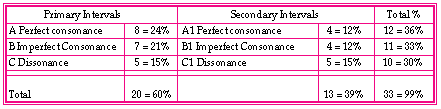

Example 10: Interval totals and percentage.
The total percentage results of the Primary and Secondary intervals brought to our attention that the perfect consonance count in both tables totaled higher than for the imperfect consonance and dissonance. This analysis reveals, if you will, that if music is composed in a concrete manner (algorithmical) from the Latin text, the results can be a balance of consonance and dissonance.
Original file name: c3Reteplas - converted on Tuesday, 24 June 1997, 21:00